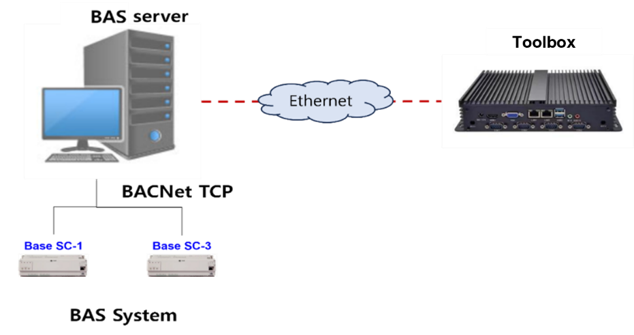
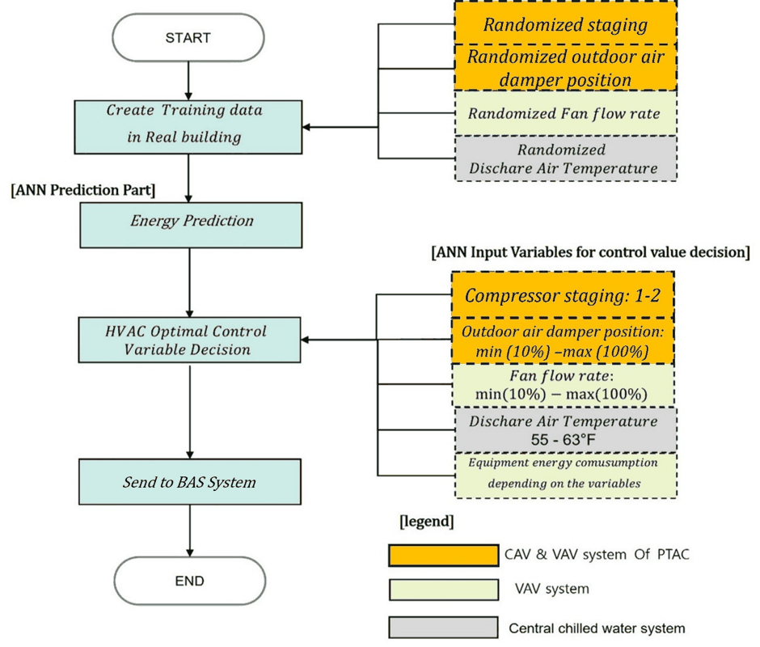

AI-Based HVAC Optimal Control Completed
EMS with an Optimal Control Algorithm for Energy-Efficient Commercial Buildings Using AI and Digital Twin Technology
At a manufacturing plant in South Carolina, artificial neural networks (ANNs) predict HVAC energy use, and an optimizer computes the setpoints that reduce energy while keeping indoor conditions within comfort limits. As the project's international partner, NC State BETLab carried out this U.S. demonstration.
Results
Cooling energy
−13.1%
Outdoor-temperature-based setpoint scheduling
- Period: Jul 11 – Aug 11, 2024
- Baseline: weather-matched days from Jun – Sep 2023
- Note: plant operating constraints ruled out full ANN control in summer
Heating energy
−25.2%
ANN-based optimal control
- Period: Dec 23, 2024 – Jan 17, 2025 (weekends excluded)
- Baseline: weather-matched winter days from 2023 – 2024
- Note: a January 2025 winter storm sharply raised prediction error; extreme-weather data are needed in training
How it works




Project details
- Funding: Korea Evaluation Institute of Industrial Technology (KEIT), Ministry of Trade, Industry and Energy · No. 20014154 · 2021–2024
- Partners: Inter Electric (lead) · Korea University · NC State BETLab
- Site: Manufacturing plant in South Carolina, USA (built 1998) · ASHRAE climate zone 3A, warm-humid and cooling-dominated
- HVAC: 1,374.5 tons of cooling capacity from chillers, GMUs, RTUs, and DLHPs
- Deployment: BACnet toolbox running PyTorch models and CasADi/IPOPT optimization on an isolated network